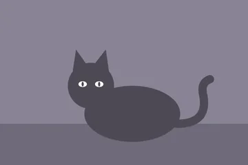
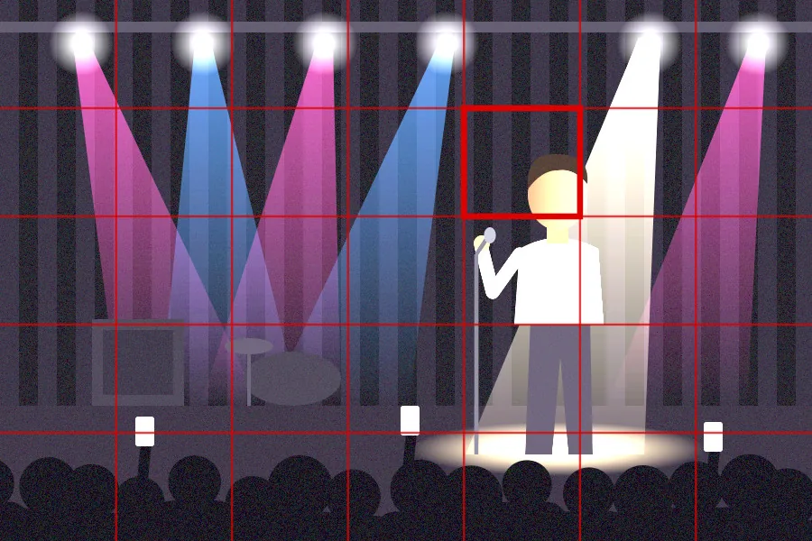
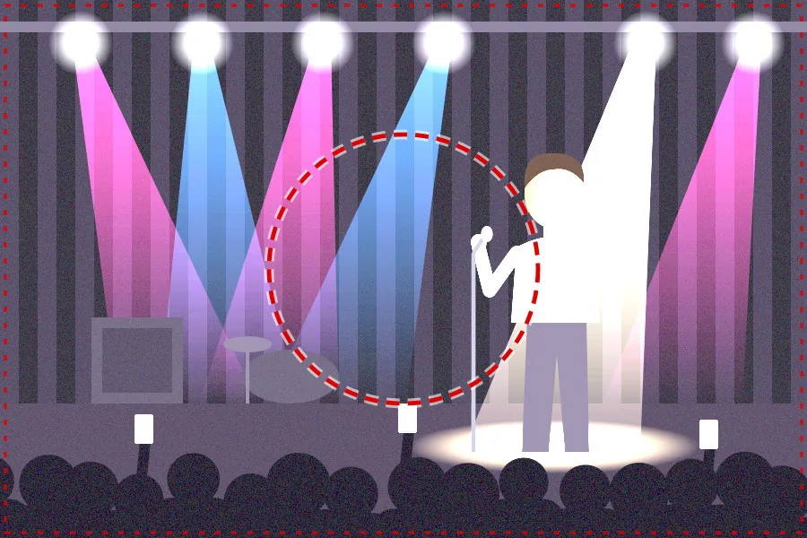
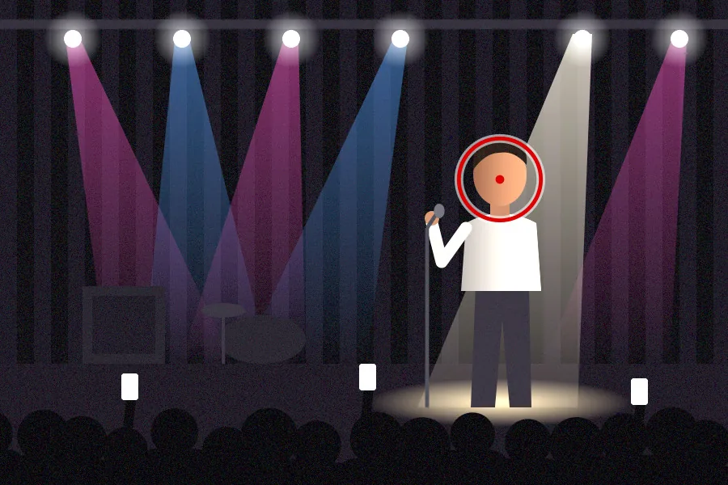
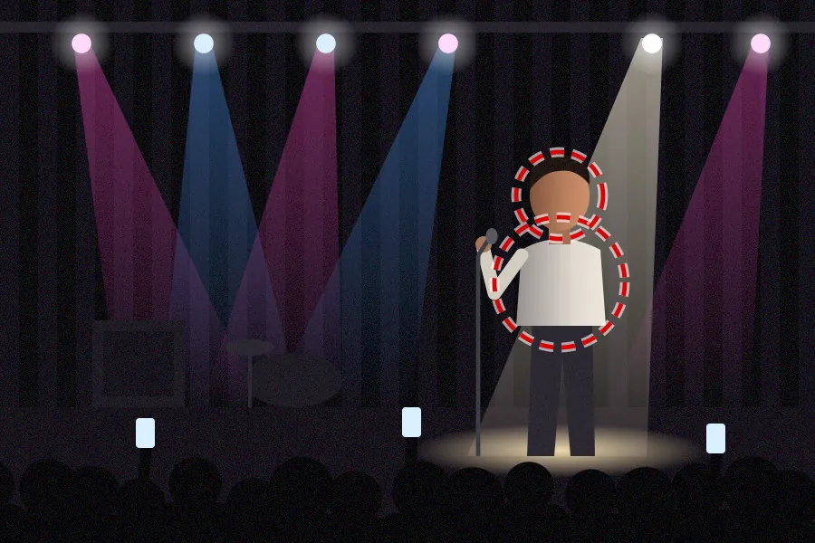

Before every shot, your camera measures the light and picks an exposure. It does this with a built-in light meter, and the metering mode decides which part of the frame the meter pays attention to. Once you know what the meter is trying to do, and how it gets fooled, exposure stops being guesswork.
How a meter thinks
A camera meter measures the light bouncing off the scene, not the light falling on it. It can’t tell a white wall in dim light from a grey wall in bright light, because both reflect the same amount. So it makes an assumption. It treats whatever it reads as a middle tone, the grey of a card that reflects 18% of the light, and picks the exposure that would make that area middle grey.
| Snowfield | Park | Black cat | |
|---|---|---|---|
| In front of the camera | |||
| What the meter gives you |  |  | |
| To fix it | +1 to +2 EV | nothing | −1 to −2 EV |
For most everyday scenes, with a mix of light and dark, that works fine. A frame full of snow is much brighter than middle grey, though, so the meter darkens it to a dull grey. A black cat on a dark sofa is much darker, so the meter brightens it to a washed-out grey. Exposure compensation fixes both. Add about +1 to +2 EV for snow or white walls, and take away 1 to 2 EV for dark subjects.
The four metering modes
Cameras offer several metering modes. The names change from maker to maker but the ideas don’t. To show the difference, here’s one scene metered four ways. A singer stands in a spotlight on a dark stage, slightly off-centre, with the focus point on the face.

Evaluative / matrix
The camera splits the frame into many zones and compares the pattern of brightness with a library of typical scenes. It gives extra weight to the zone around the active focus point. It’s the best all-round mode and handles most situations well. Here, though, the big dark hall still drags the exposure up, so the singer comes out too bright and the white shirt burns out.

Centre-weighted
Measures the whole frame but gives most of the weight, often about three-quarters, to a large circle in the middle. It’s predictable, which is why plenty of portrait photographers like it. Here the circle covers mostly dark stage. The meter brightens everything and the singer ends up completely overexposed.

Spot
Measures only a tiny circle, about 1.5–3% of the frame, either in the centre or at the active focus point. You get full control. Point it at whatever has to be right. On the singer’s face it nails the exposure, and the hall stays dark.

Highlight-weighted
Some cameras have this one. It sets the exposure so the brightest parts of the frame keep their detail, which makes it ideal for spotlit performers and other bright subjects on dark backgrounds. Here it holds the white shirt and the face, and everything else stays dark, the way it should.
Exposure compensation and lock
In the automatic and semi-automatic modes, exposure compensation is how you tell the camera its meter got it wrong. It’s usually a dial or a button marked plus and minus, and it moves in thirds of a stop. +1 makes the picture one stop brighter than the meter wants. −1 makes it one stop darker. Set it back to zero afterwards, or the next scene will be off too.
Exposure lock, often marked AE-L, freezes the meter reading. Point the camera at the part that has to be right, lock it, then recompose. That’s the classic way to use spot metering. Meter on the face, lock, and frame the picture however you like.
Reflected and incident light
Every camera meter reads reflected light, which is exactly why bright and dark subjects can fool it. A handheld light meter can also measure incident light. You hold it at the subject, pointing back towards the camera, and it reads the light falling on the scene. That reading doesn’t care how bright or dark the subject is, so snow stays white and a black cat stays black. Studio photographers still use them, and a grey card gives you much the same benefit for free.
Metering in practice
In everyday shooting, most photographers leave the camera on evaluative metering and keep an eye on the histogram. When a scene tricks the meter, they reach for exposure compensation first. Spot metering comes out for the awkward cases, like a performer under a spotlight or a face against a bright window. Once you know how your own camera reacts, you’ll find yourself dialling in compensation before you’ve even taken the first shot.
Which mode when?
Everyday scenes
Evaluative / matrix
Concert or stage
Spot or highlight-weighted
Backlit portrait
Spot on the face
Sunset, bright sky
Highlight-weighted, or −1 EV
Snow or beach
Evaluative, +1 to +2 EV
Exercises
Exercises M1–M4. Tick each one off when you’ve tried it. Your ticks stay on this phone or computer.
- M1
Middle grey
Fill the frame with a white wall, then a grey surface, then a black one, all on automatic exposure. They all come out grey. Fix them with exposure compensation.
- M2
Four modes
Find a scene with strong contrast, like a person against a bright window. Photograph it in each metering mode without compensation and compare.
- M3
Lock and recompose
Spot-meter a face, lock the exposure, recompose and shoot. Compare it with a picture taken without locking.
- M4
Compensate by eye
Shoot a white flower or a pale beach on automatic exposure. Add compensation a third of a stop at a time until it looks the way you remember it. Then set it back to zero.
Photography Handbook, © 2026 Samskara Photo Club. Text and illustrations are licensed under CC BY-NC-SA 4.0. You may share and adapt them for non-commercial use if you credit the club and share your version under the same licence. Commercial use needs the club’s permission. The club logo is not covered by the licence.